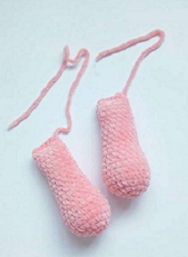

Мастер клас м'який зайчик
Зміст сайту :
| КА |
Кільцо амігурумі |
| СБН |
Стовпчик без накиду |
ПР |
Прибавка |
УБ |
Убавка |
ССН |
Стовпчик з накидом |
ВП |
Воздушна петля |
Тіло і голова :
Набиваємо в ході в'язання рівномірно, але не сильно
- 6 сбн в КА
- 6 пр (12)
- (1 сбн, пр)*6 раз (18)
- (2 сбн, пр)*6 раз (24)
- (3 сбн, пр)*6 раз (30)
- (4 сбн, пр)*6 раз (36)
- (5 сбн, пр)*6 раз (42)
- (6 сбн, пр)*6 раз (48)
- (7 сбн, пр)*6 раз (54)
- (17 сбн, пр )*3 раза (57)
- Пров'язати 10 рядків без змін - 57 сбн
- (6 сбн, пр)*6 раз (48)
- Пров'язати 3 рядка без змін-54 сбн
- (7 сбн, уб)*6 раз (48)
- 48 сбн
- 2 рядка - 42 сбн
- (5 сбн, уб)*6 раз (36)
- 36 сбн
- (4 сбн, уб)*6 раз (30)
- (3 сбн, уб)*6 раз (24)
- (2 сбн, уб)*6 раз (18)
- 18 сбн
- 18 пр ( у кожну петлю рядка в'язити два сбн)
- (5 сбн, пр)*6 раз (42)
- (6 сбн, пр)*6 раз (48)
- (7 сбн, пр)*6 раз (54)
- Пров'язати 3 рядка без змін- 54 сбн
- (16 сбн, уб)*3 раза (51)
- (15 сбн, уб)*3 раза (48)
- 48 сбн
- 48 сбн
- (6 сбн, уб)*6 раз (42)
- 42 сбн
- (5 сбн, уб)*6 раз (36)
- (4 сбн, уб)*6 раз (30)
- (3 сбн, уб)*6 раз (24)
- (2 сбн, уб)*6 раз (18)
- (1 сбн, уб)*6 раз (12)
- 6 уб (6)
- Залишившийся оствір зтягнути

Верхні лапки :
Набиваємо в ході в'язання рівномірно, але не сильно
- 6 сбн в КА
- 6 пр (12)
- (1 сбн, пр)*6 раз (18)
- (2 сбн, пр)*6 раз (24)
- Пров'язати 3 рядка без змін - 24 сбн
- (2 сбн, уб)*6 раз (18)
- Пров'язати 6 рядків без змін - 18 сбн
- (4 сбн, уб)*3 раза (15)
- Пров'язати 9 рядків без змін -15 сбн
- (3 сбн, уб)*3 раза (12)
- Скасти деталь навпіл та пров'язати 6 сбн
Нижні лапки :
Набиваємо в ході в'язання рівномірно, але не сильно
- 7 ВП, починаючи з 2-ої петлі від гачка, 5 сбн, 3 сбн в 1 п, 4 сбн, пр (14)
- Пр, 4 сбн, 3 пр, 4сбн, 2 пр (20)
- 1 сбн, пр, 4 сбн, (1 сбн, пр)*3 раза, 4 сбн, (1 сбн, пр)*2 раза (26)
- 2 сбн, пр, 4 сбн, (2 сбн, пр)*3 раза, 4 сбн, (2 сбн, пр)*2 раза (32)
- 32 сбн за задню стінку
- Пров'язати 2 рядка без змін - 32 сбн
- 10 сбн, 6 уб, 10 сбн (26)
- 9 сбн, 4 уб, 9 сбн (22)
- Пров'язати 5 рядків без змін - 22 сбн
- уб, 20 сбн (21)
- 21 сбн
- уб, 19 сбн (20)
- Пров'язати 4 рядка без змін -20 сбн
- уб, 18 сбн (19)
- 19 сбн
- уб, 17 сбн (18)
- 18 сбн
- (1 сбн, уб)*6 раз (12)
- 6 уб
- Залишившийся оствір зтягнути
Хвостик :
- 8 сбн в КА
- 8 пр (16)
- (1 сбн, пр)*8 раз (24)
- 24 сбн
- (2 сбн, уб)*6 раз (18)
- (1 сбн, уб)*6 раз (12)
- Нитку відрізати, обережно заховати кінець.
Вушки :
Починаючи з 2-го рядка , в'язати ССН
- 6 сбн в КА
- 6 пр ссн (12)
- (1 ссн, пр)*6 раз (18)
- (2 ссн, пр)*6 раз (24)
- (3 ccн, пр)*6 раз (30)
- Пров'язати 4 рядка без змін - 30 ссн
- уб, 28ссн (29)
- 28ссн
- (уб, 12 ссн)*2 раза (26)
- 26 ссн
- (уб, 11 ссн)*2 раза (24)
- (уб, 10 ссн)*2 раза (22)
- (уб, 9 ссн)*2 раза (20)
- (уб, 8 ссн)*2 раза (18)
- (уб, 7 ссн)*2 раза (16)
- (уб, 6 ссн)*2 раза (14)
- Скасти деталь навпіл та пров'язати 7 сбн
Носик :
- 5 ВП, починаючи з 2-ої петлі від гачка, 3 сбн, 3 сбн в 1 п, 2 сбн, пр (10)
- Пр, 2 сбн, 3 пр, 2 сбн, 2 пр (16)
- 1 сбн, пр, 2 сбн, (1 сбн, пр)*3 раза, 2 сбн, (1 сбн, пр)*2 раза (22)
Утяжка :
Для утяжки беремо досить міцну нитку і довгу голку.
Вводимо голку в 35-му ряду, виводимо приблизно в 43-44-м
ряду, проходимо через 5-6 стовпчиків і заводимо голку назад
всередину, виводимо в 35-му ряду, через стовпчик від того місця де
ввели голку перший раз. тягнемо за кінці і міцно зав'язуємо.
Можна повторити ще раз. Тепер робимо Утяжка в тому місці, де у зайчика
будуть нижні лапки. Також беремо міцну нитку і довгу голку. вводимо
голку на рівні 13-го ряду, виводимо на протилежному боці,
відступаємо стовпчик і заводимо голку назад, виводимо поруч з
тим місце де завели голку перший раз. Стягуємо, міцно
зав'язуємо.
Збірка :
Пришиваємо верхні лапки. нижні лапки пришиваємо за допомогою
нитяного кріплення пришиваємо вушка. Далі пришиваємо носик, оченята, вишиваємо брівки. І ваш
Пухляш готов !!!
Ще більше схем для в'язання : Схеми амігурумі.